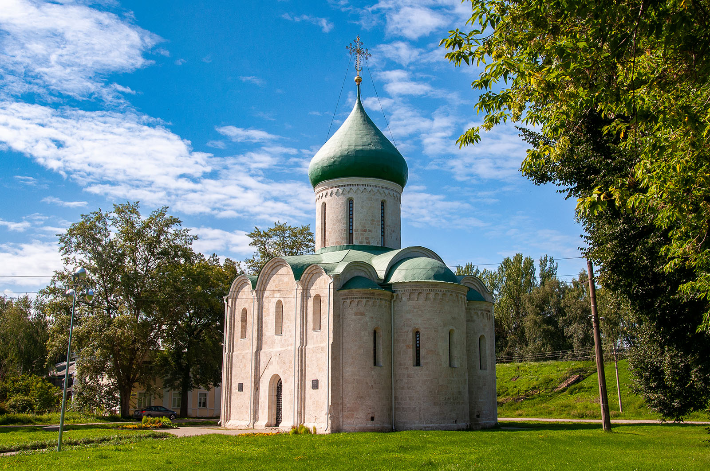
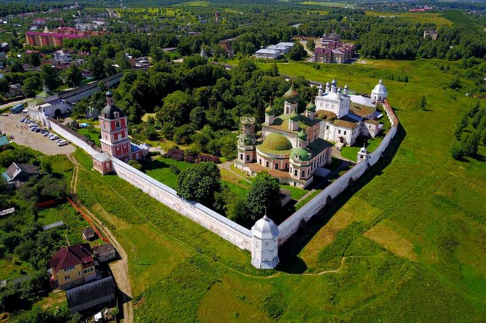
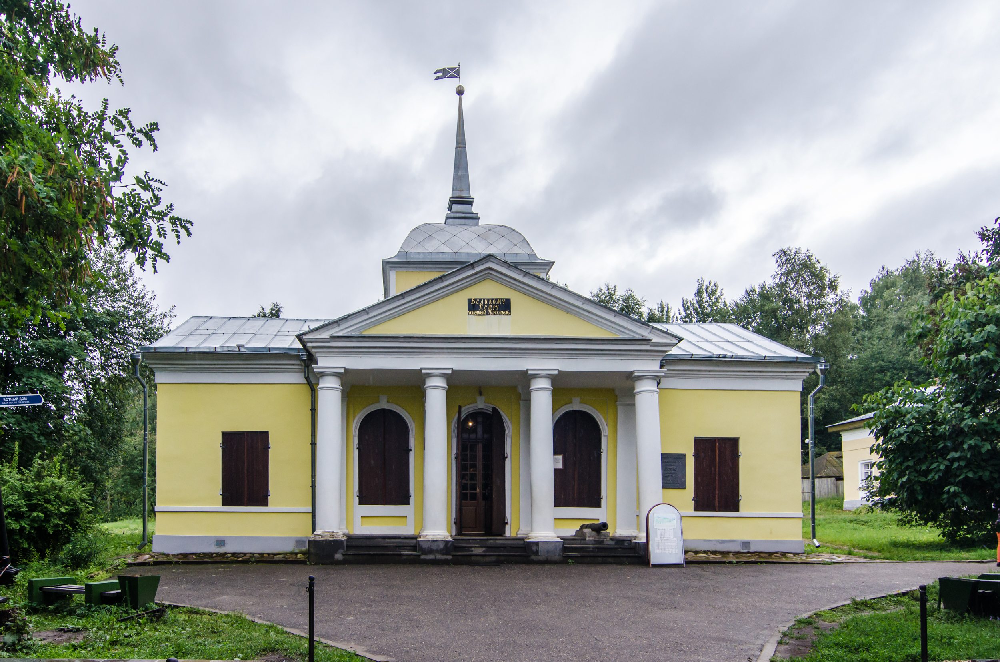
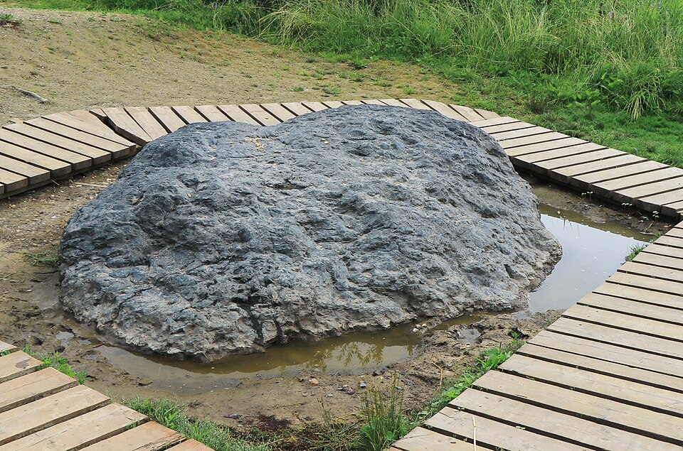
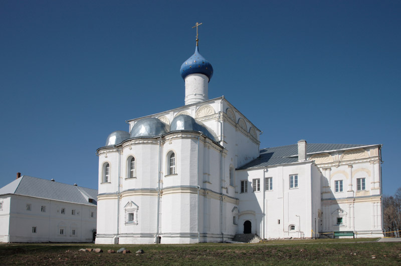
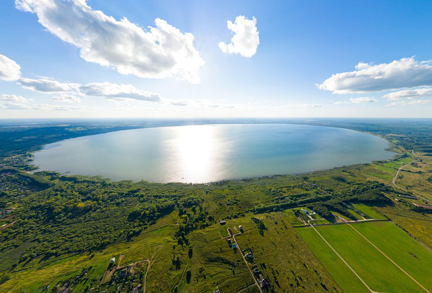
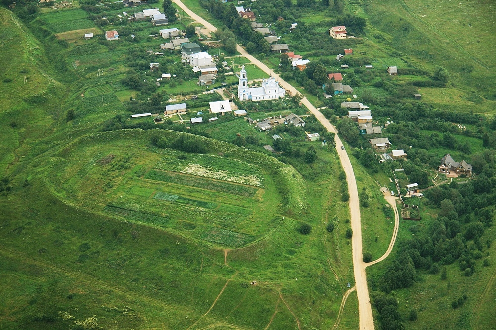
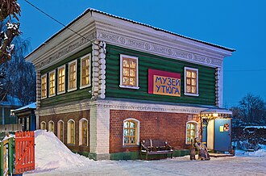
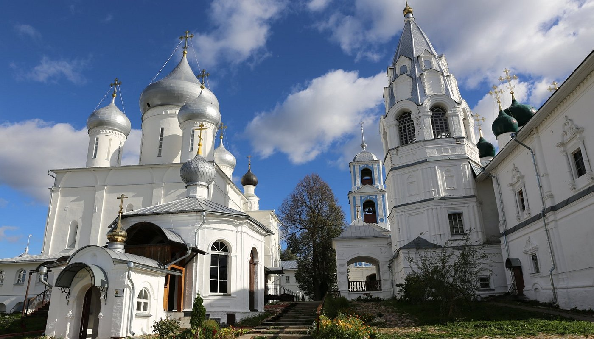

Один из старейших белокаменных памятников Северо-Восточной Руси. Заложен Юрием Долгоруким в 1152 году и достроен при князе Андрее Боголюбском в 1157 году. Сложен из тесаных блоков известняка.

Упраздненный мужской монастырь, основанный в начале XIV века при Иване Калите. С 1919 года на его территории располагается Переславль-Залесский государственный историко-архитектурный и художественный музей-заповедник.

Один из старейших отечественных музеев, открытый в 1803 году. Здесь на Плещеевом озере Петром I строилась учебная потешная флотилия. В Ботном доме хранится подлинный деревянный бот «Фортуна».

Крупный культовый валун ледникового происхождения, весом около 12 тонн. Являлся объектом поклонения мерянских племен и древних славян. Состоит из мелкозернистого кварцевого биотитового сланца.

Действующий мужской монастырь Русской православной церкви, основанный в 1508 году преподобным Даниилом Переяславским. Троицкий собор монастыря возведен в 1532 году в честь рождения Ивана Грозного.

Моренное пресноводное озеро на юго-западе Ярославской области. В входит в состав одноименного национального парка. Площадь водной поверхности составляет около 51 квадратного километра, максимальная глубина — 25 метров.

Древние оборонительные укрепления города, сооруженные в 1152 году при закладке крепости Юрием Долгоруким. Протяженность валов составляет около 2,5 километров, первоначальная высота достигала 10-16 метров.

Частный политехнический музей, посвященный истории развития утюгов и бытовой техники. В коллекции представлено более 200 экспонатов различного типа: угольные, паровые, спиртовые и электрические приборы.

Один из древнейших монастырей России, расположенный на окраине города. Согласно летописям, основан около 1010 года князем Борисом Владимировичем. Главный Никитский собор построен по приказу Ивана Грозного в 1564 году.
Компактный пеший маршрут по центральным историческим точкам города.
Автомобильный маршрут, охватывающий ключевые монастырские комплексы в черте города и пригороде.